Your paper library, on your server.
Bubo is a self-hosted reference manager. Your papers and PDFs live on your own machine, and you read, annotate and cite them from any browser.
- Runs on your own server
- One Docker container
- No accounts, no cloud
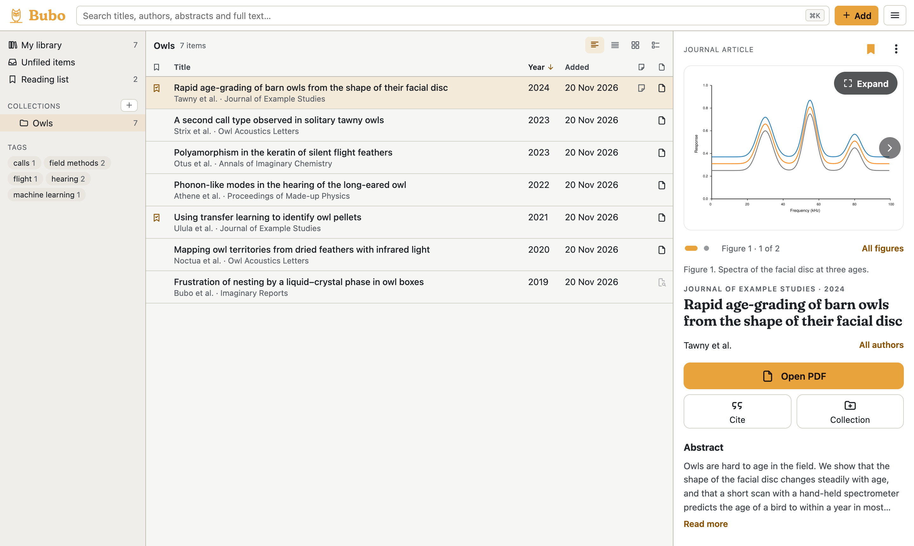
Search
Find the sentence, not just the paper
Search covers titles, authors, abstracts, your notes and annotations, and the full text of every PDF. Each result shows the sentence that matched.
- The item pane lists every matching sentence with its page number
- Click one to open the PDF at that page, with the words highlighted
- Accent-insensitive, and words match by prefix
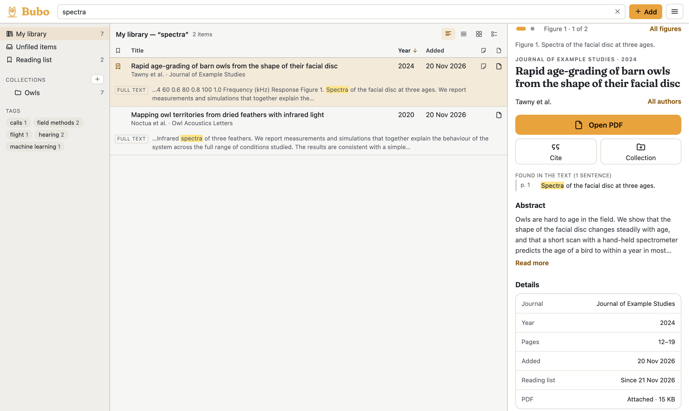
Read and annotate
Highlights and notes that stay with the paper
Read in the built-in viewer. Select text to highlight it in one of six colours, add a comment, or pin a note anywhere on a page.
- Annotations are kept on the server; the original PDF is never changed
- Download a copy with standard PDF annotations, readable in any PDF reader
- Your comments are included in search
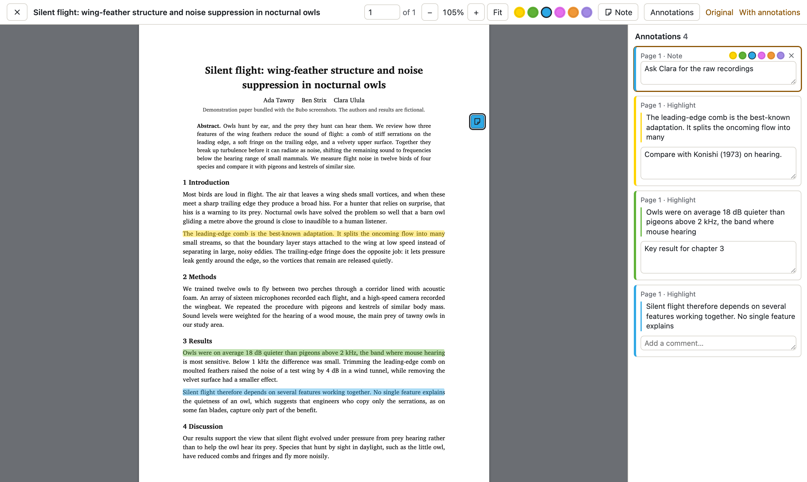
Add papers
Paste an identifier or drop a PDF
One box takes a DOI, an arXiv ID, a PubMed ID or a publisher's URL and works out which it is. Bubo fetches the metadata from Crossref, arXiv or PubMed and downloads an open-access PDF when there is one.
- Dropped PDFs are identified from their DOI or arXiv stamp
- Find PDF looks on arXiv, Unpaywall and the publisher's page
- Mark a file as supplementary information for its paper as you upload it
- Duplicates are detected by file, DOI and arXiv ID
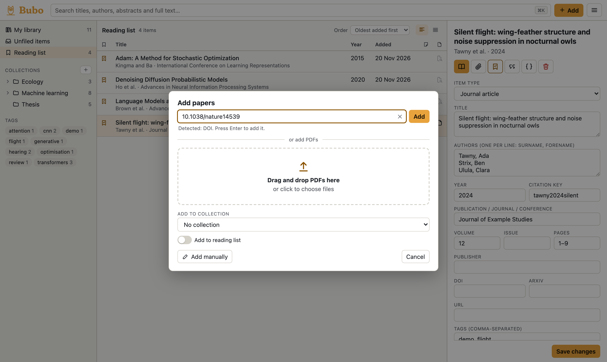
Browse
See your papers by their figures
Bubo finds the figures in every PDF. Browse the library as a table, a gallery of figure cards or a list with thumbnails, and open any paper to swipe through its figures.
- Vector plots keep their axes and labels, with the caption beneath
- Choose which figure is a paper's cover
- With nothing selected, an overview of what you added lately, what is left to read and what needs fixing
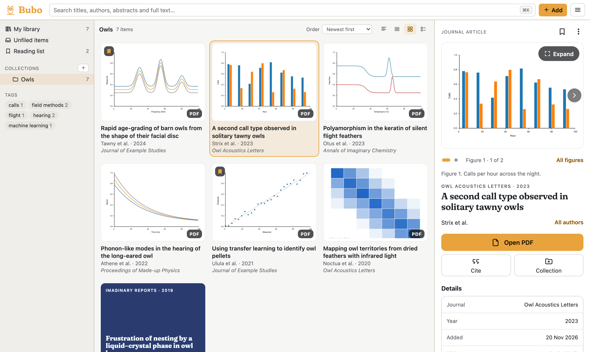
Organise
A reading list that works like a queue
Drag papers onto the reading list, or have new papers go there straight away. Like every list, it shows the newest papers first, or works as a queue in the order you added them.
- Nested collections; drag papers and collections to file them
- Tags and notes on every paper
- Select several papers to tag, file or export them in one go
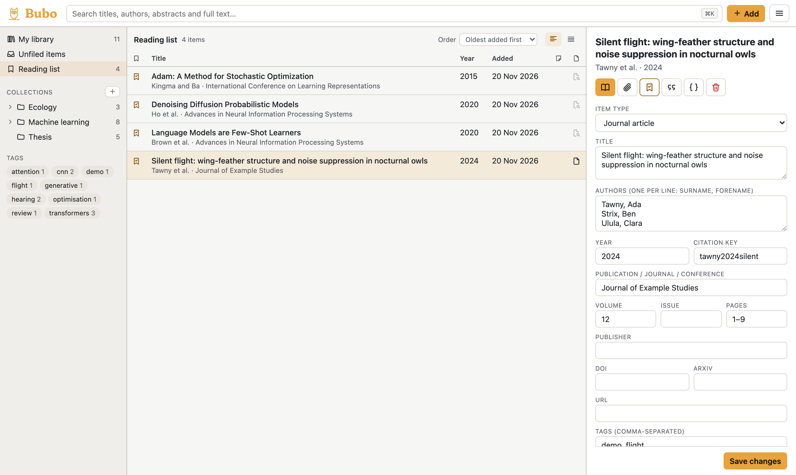
Keep up
A radar for what the people you follow publish
Follow scientists by their ORCID iD. Every few hours Bubo looks for their new publications and gathers them on your radar, ready to add to your library in one click.
- Publications from ORCID and OpenAlex, with papers wrongly credited to someone's iD left out
- Added by DOI, with full metadata and an open-access PDF when there is one
- A count of what is new in the sidebar, until you take a look
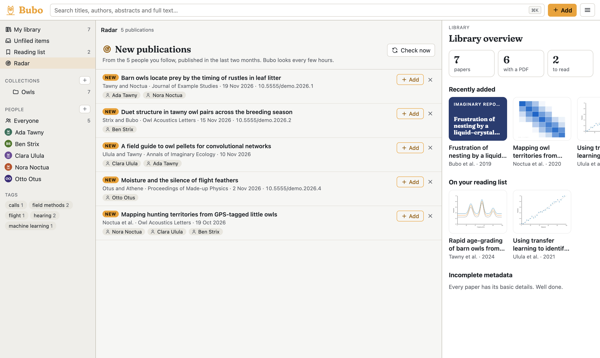
People
The scientists you follow, like a shelf of books
Each person has a page with their position, citations, h-index and research topics, and their photo from Wikimedia Commons when there is one, or one you add yourself.
- Every publication, with the ones already in your library marked
- Authors you follow appear with their photo on each paper
- Search the people you follow by name, institution or topic
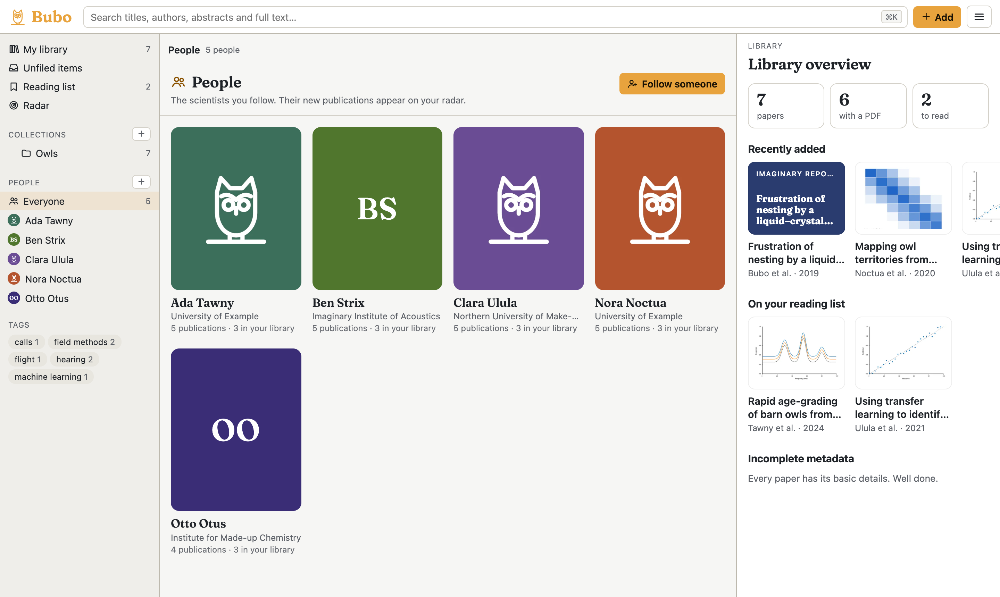
Journals
Your library, by the journals it came from
Every journal in your library gets a cover made from the figures of your latest papers in it. Open one to see your papers there, under its publisher, h-index, citations per article and open-access status.
- Journal details from OpenAlex, looked up once a month at most
- The journal on every paper's sheet takes you there
- The years your papers in it span, at a glance
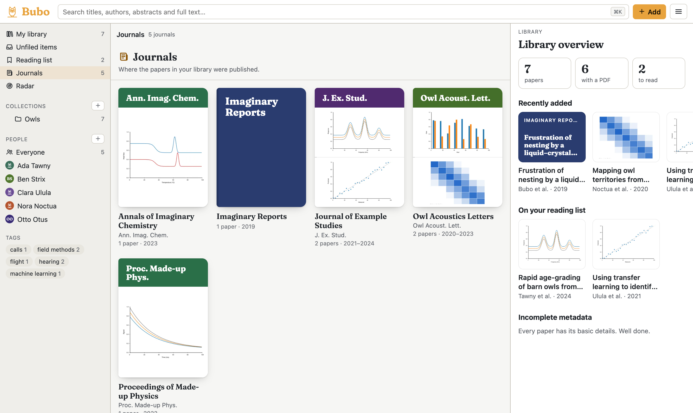
On your phone
Your library, by its figures
On a phone, Bubo shows each paper by its first figure, taken from the PDF, so you recognise papers the way you remember them. Add it to your home screen and it opens like an app.
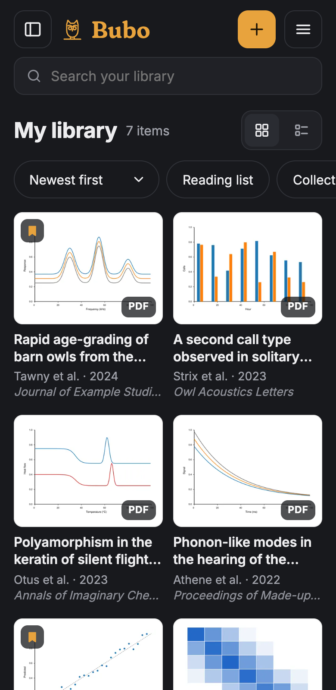
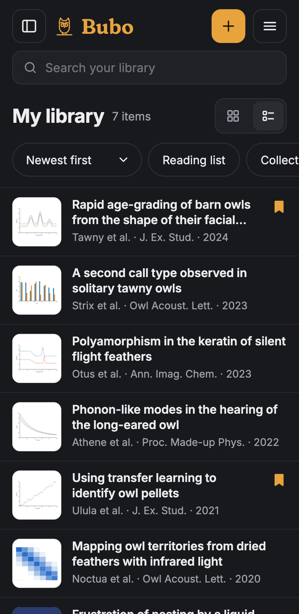
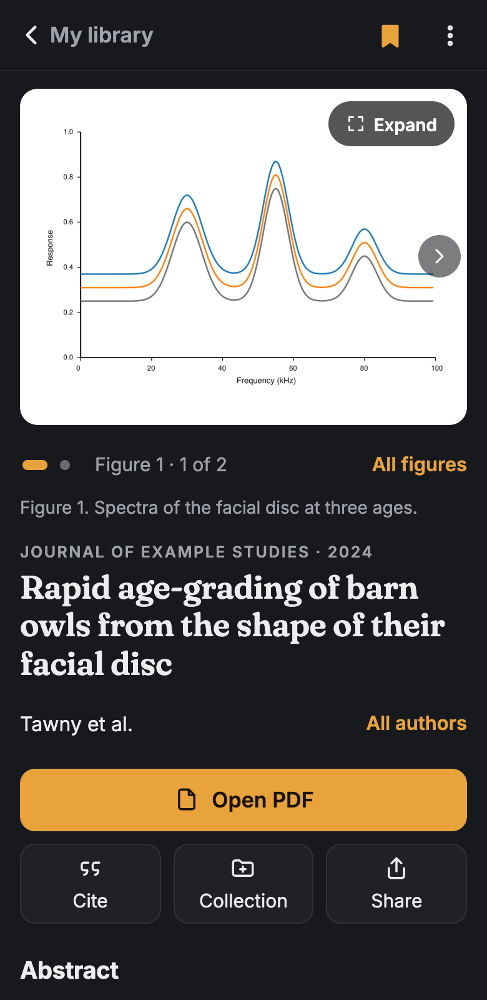
Figures, found for you
When a PDF arrives, Bubo finds its figures, vector plots included, with their captions. Pick any of them as the cover.
Everything about a paper
Swipe through the figures, read the abstract, copy the DOI, file it in collections and keep notes that save as you type.
The same library
Phone and computer show the same papers, highlights and notes. On a computer, Bubo keeps its familiar table.
And also
The rest of what you need to write
Copy a citation
APA 7, Chicago, MLA 9, Harvard, IEEE or Vancouver, with formatting that survives pasting into a word processor.
BibTeX export
Copy one entry, or export everything in the current view to a .bib file.
Refresh metadata
Compare with Crossref or arXiv field by field, and choose what to replace. Your corrections are never overwritten by surprise.
Readable file names
PDFs are stored in one folder as Author et al. - Year - Title.pdf, so the files are useful without Bubo.
Works on an external disk
Keep the library on an exFAT or NTFS drive. The data folder must already exist, so Bubo never quietly creates an empty library elsewhere.
Keyboard friendly
/ or Ctrl/Cmd+K to search, arrow keys to move, Enter to open the PDF, N to add a note.
Supplementary information
Keep SI files of any type with their paper, stored next to it as … - SI.pdf. Their text is searched too.
An app on your phone
Add Bubo to your home screen: it opens full screen, with the owl as its icon.
Free software
Released under the AGPL-3.0. Read the code, change it and run it however you like.
Install
Running in a few minutes
You need a server with Docker and Docker Compose. Bubo is for a single user and is protected by one password.
Download two files
docker-compose.ymland the example settings. The image itself is ready-built for x86-64 and ARM servers.Configure it
In
.env, setBUBO_PASSWORDandBUBO_DATA_DIR, the folder that will hold the library. The folder must already exist.Start it
Docker downloads the image and starts it. Then open
http://localhost:2826. To reach it from elsewhere, put it behind an HTTPS reverse proxy such as Caddy.Keep it up to date
A new image is built a few minutes after each change. Run
docker compose pull && docker compose up -d; your library is kept.
$ mkdir bubo && cd bubo $ src=https://raw.githubusercontent.com/magonji/Bubo/main $ curl -fsSLO $src/docker-compose.yml $ curl -fsSL $src/.env.example -o .env # edit .env: BUBO_PASSWORD, BUBO_DATA_DIR $ mkdir -p /path/to/your/data $ docker compose up -d
External disks, permissions, HTTPS and every setting are covered in the README.